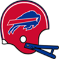

NFC Pro Bowl announced!The NFC Conference has announced their Pro Bowl squad for 1985.
QB Joe Theismann - Lions (270/415, 2663 yds, 22 TD)
QB Randall Cunningham - Vikings (263/393, 2295 yds, 16 TD)
QB Dave Krieg - Eagles (201/334, 3570 yds, 31 TD)
RB James Brooks - Bears (290 att, 1465 yds, 9 TD, 23 rec, 140 yds, 2 TD)
RB Eric Dickerson - Falcons (422 att, 1889 yds, 13 TD, 24 rec, 217 yds, 0 TD)
RB James Wilder - Panthers (374 att, 1486 yds, 9 TD, 40 rec, 330 yds, 2 TD)
FB Matt Suhey - Falcons (35 att, 117 yds, 2 TD)
G Max Montoya - Bears (61 Pancakes)
G Kent Hill - Falcons (67 Pancakes)
G Guy McIntyre - Panthers (62 Pancakes)
T Karl Baldischwiler - Bears (84 Pancakes)
T Mike Kenn - Falcons (88 Pancakes)
T Irv Pankey - Eagles (105 Pancakes)
C Rich Umphrey - Bears (49 Pancakes)
C Tony Slaton - Eagles (67 Pancakes)
TE Steve Jordan - 49ers (38 rec, 411 yds, 1 TD)
TE Bennie Cunningham - Eagles (51 rec, 918 yds, 9 TD)
WR Mike Haynes - Bears (43 rec, 487 yds, 4 TD)
WR Jim Jensen - Lions (70 rec, 836 yds, 9 TD)
WR Jerry Rice - 49ers (56 rec, 780 yds, 7 TD)
WR Gary Clark - Eagles (55 rec, 1274 yds, 12 TD)
WR Drew Hill - Panthers (88 rec, 917 yds, 10 TD)
CB Hanford Dixon - Lions (93 Tck, 1 Int, 3 FF, 1 FR)
CB Danny Walters - Eagles (49 Tck, 6 Int, 3 Def TD, 2 FF)
CB John Hendy - [Redacted]s (55 Tck, 5 Int, 1 Blk FG, 2 FF, 1 FR)
LB Linden King - Bears (144 Tck, 8 Sck, 1 Int, 3 FF, 1 FR)
LB Duane Bickett - Lions (145 Tck, 7 Sck, 1 Int, 6 FF, 4 FR)
LB Mike Merriweather - 49ers (129 Tck, 6 Sck, 1 Int, 1 Sfty)
LB Wilber Marshall - Eagles (173 Tck, 1 Sck)
LB Lawrence Taylor - [Redacted]s (222 Tck, 4 Sck, 2 FF)
LB Clay Matthews - Panthers (125 Tck, 7 Sck, 1 Int, 1 Sfty, 2 FF, 1 FR)
DT Rulon Jones - Bears (26 Tck, 1 Sck, 2 FF)
DT Joe Nash - Lions (20 Tck, 3 Sck, 3 FF, 2 FR)
DT William Perry - Lions (25 Tck, 3 Sck, 1 FF)
DT John Dutton - Eagles (23 Tck, 3 Sck, 2 FF, 1 FR)
DE Chris Doleman - Packers (93 Tck, 26 Sck, 3 FF)
DE Bruce Smith - Packers (39 Tck, 12 Sck, 2 FF)
DE Richard Dent - Lions (76 Tck, 11 Sck, 2 FF, 1 FR)
FS Keith Simpson - Bears (75 Tck, 3 Int, 1 Def TD, 1 FF, 1 FR)
FS Bud Brown - Eagles (53 Tck, 2 Sck, 2 Int, 3 FF, 2 FR)
SS Dave Duerson - Bears (112 Tck, 3 Sck, 2 FF)
SS Donnie Shell - Eagles (107 Tck, 6 Sck, 1 Int, 1 Def TD, 2 FF, 1 FR)
K Al Del Greco - Panthers (25/27 FG)
P Brian Hansen - Packers (4348 yards, 39 inside 20)AFC Pro Bowl announced!The AFC Conference has announced their Pro Bowl squad for 1985.
QB Tommy Kramer - Chiefs (300/444, 3606 yds, 35 TD)
QB Dan Fouts - Oilers (384/551, 4390 yds, 40 TD)
QB Dan Marino - Bengals (336/489, 3708 yds, 31 TD)
RB Marcus Allen - Chiefs (364 att, 1695 yds, 17 TD, 49 rec, 504 yds, 4 TD)
RB John Riggins - Blue Bombers (372 att, 1262 yds, 6 TD, 24 rec, 156 yds, 0 TD)
RB Tony Dorsett - Monarchs (239 att, 1170 yds, 10 TD, 28 rec, 312 yds, 1 TD)
FB Roger Craig - Oilers (234 att, 1017 yds, 6 TD, 31 rec, 222 yds, 1 TD)
G Paul Howard - Raiders (55 Pancakes)
G Ben Utt - Bengals (61 Pancakes)
G Jim Ritcher - Monarchs (66 Pancakes)
T Jim Lachey - Oilers (79 Pancakes)
T Ken Lanier - Steam Rollers (80 Pancakes)
T Chris Hinton - Monarchs (86 Pancakes)
C Mike Webster - Steam Rollers (51 Pancakes)
C Kirk Lowdermilk - Monarchs (72 Pancakes)
TE Kellen Winslow - Oilers (76 rec, 673 yds, 6 TD)
TE Jay Novacek - Steam Rollers (77 rec, 642 yds, 4 TD)
WR Tony Hill - Chiefs (65 rec, 1152 yds, 15 TD)
WR Roy Green - Oilers (81 rec, 1180 yds, 9 TD)
WR Willie Gault - Raiders (56 rec, 1110 yds, 11 TD)
WR Eddie Brown - Bengals (71 rec, 1203 yds, 6 TD)
WR Art Monk - Steam Rollers (111 rec, 1231 yds, 9 TD)
CB Darrell Green - Raiders (85 Tck, 1 Sck, 3 Int, 2 Def TD, 2 FF)
CB Brett Maxie - Bengals (61 Tck, 3 Int, 1 Def TD, 1 Blk FG, 1 FF, 1 FR)
CB Carl Lee - Monarchs (87 Tck, 4 Int, 2 FF)
LB Matt Millen - Chiefs (172 Tck, 2 Sck, 5 FF)
LB Scott Studwell - Raiders (123 Tck, 3 Sck, 1 Sfty, 1 FR)
LB Carl Banks - Bills (122 Tck, 10 Sck, 1 FF)
LB Rickey Jackson - Blue Bombers (167 Tck, 2 Sck, 1 Int, 1 Def TD)
LB Mike Singletary - Monarchs (138 Tck, 4 Sck, 2 FF, 2 FR)
LB Kyle Clifton - Monarchs (145 Tck, 4 Sck, 1 Int, 1 Def TD, 3 FF, 3 FR)
DT Derland Moore - Oilers (25 Tck, 5 Sck, 1 FF)
DT Mike Pitts - Raiders (20 Tck, 1 Sck)
DT Randy White - Bills (39 Tck, 1 Sck, 1 FR)
DT Fred Smerlas - Steam Rollers (16 Tck, 3 Sck, 2 FF, 1 FR)
DE Sean Jones - Raiders (42 Tck, 15 Sck)
DE Mark Gastineau - Raiders (54 Tck, 15 Sck, 2 FF, 1 FR)
DE Reggie White - Bills (109 Tck, 25 Sck, 10 FF, 6 FR)
FS Richard Johnson - Dolphins (64 Tck, 1 Sck, 3 Int, 1 Def TD, 3 FF, 1 FR)
FS Ronnie Lott - Raiders (80 Tck, 3 Sck, 2 Int, 1 FF)
SS Kenny Easley - Oilers (86 Tck, 4 Sck, 2 Int, 1 FF)
SS Joey Browner - Raiders (98 Tck, 3 Sck, 1 FF)
K Gary Anderson K - Raiders (31/39 FG)
P Steve Cox - Raiders (3879 yards, 39 inside 20)QB Bobby Hebert (OAK) wins Playoff MVP! NEW YORK -- The Oakland Raiders' QB took home the 1985 Playoff MVP award today. Hebert won the award by amassing playoff totals of 39/64, 498 yds, 6 TD. NEW YORK -- The Oakland Raiders' QB took home the 1985 Playoff MVP award today. Hebert won the award by amassing playoff totals of 39/64, 498 yds, 6 TD.
QB Dan Fouts (HOU) wins League MVP! NEW YORK -- The Houston Oilers' QB was a landslide winner Friday in balloting by a nationwide panel of 50 sports writers and broadcasters who cover the league. Fouts won the MVP award by amassing season totals of 384/551, 4390 yds, 40 TD. NEW YORK -- The Houston Oilers' QB was a landslide winner Friday in balloting by a nationwide panel of 50 sports writers and broadcasters who cover the league. Fouts won the MVP award by amassing season totals of 384/551, 4390 yds, 40 TD.
"I really accept this award on behalf of the team and the organization because there is no way I would have accomplished this much without everyone creating a winning environment," Fouts said after receiving the award.
RB Eric Dickerson (ATL) wins Offensive Player of the Year! NEW YORK -- That blur speeding away from opposing defenses and running off with the Wolverine Studios Sports Network 1985 Offensive Player of the Year award is Eric Dickerson. Considered one of the fastest men in pro football, Dickerson was uncatchable in racking up 1889 rushing yards on the season. NEW YORK -- That blur speeding away from opposing defenses and running off with the Wolverine Studios Sports Network 1985 Offensive Player of the Year award is Eric Dickerson. Considered one of the fastest men in pro football, Dickerson was uncatchable in racking up 1889 rushing yards on the season.
That earned the back 38 1/2 votes Wednesday from a nationwide panel of 50 sports writers and broadcasters who cover the league.
"I kind of realize what I did and I feel like I had a dream season," said Dickerson, who scored 13 touchdowns.
DE Reggie White (BUF) wins Defensive Player of the Year!NEW YORK -- In his own view, Reggie White put together his best professional season in 1985. How appropriate, then, that he is the Wolverine Studios Sports Newtwork 1985 Defensive Player of the Year.
The versatile White had 109 tackles, 25 sacks, 0 interceptions, and 10 forced fumbles with 0 defensive touchdowns, and was a key to the Bills' turnaround on defense. His role on the defense earned White a majority of votes Tuesday from a nationwide panel of 50 sports writers and broadcasters who cover the league.DE Reggie White (BUF) wins Defensive Rookie of the Year!NEW YORK -- The Buffalo Bills' DE was a landslide winner Friday in balloting by a nationwide panel of 50 sports writers and broadcasters who cover the league. White won the Rookie of the Year award by amassing season totals of 109 Tck, 25 Sck, 10 FF, 6 FR.RB Eric Dickerson (ATL) wins Offensive Rookie of the Year!NEW YORK -- The Atlanta Falcons' RB was a landslide winner Friday in balloting by a nationwide panel of 50 sports writers and broadcasters who cover the league. Dickerson won the Rookie of the Year award by amassing season totals of 422 att, 1889 yds, 13 TD, 24 rec, 217 yds, 0 TD.1985 Super BowlThe Oakland Raiders have defeated the Washington [Redacted]s in the 1985 Super Bowl.
The final score was Raiders 20 - [Redacted]s 13.
Bobby Hebert - QB had a dominant game on offense playing a key part in the victory.
On defense Mark Gastineau - DE had a stellar outing helping seal the win.AFC Championship GameThe Oakland Raiders have defeated the London Monarchs in the 1985 AFC Championship Game.
The final score was Raiders 23 - Monarchs 8.
Tony Nathan - RB had a dominant game on offense playing a key part in the victory.
On defense Mike Singletary - LB had a stellar outing providing a silver lining to the loss.NFC Championship GameThe Washington [Redacted]s have defeated the Detroit Lions in the 1985 NFC Championship Game.
The final score was Lions 20 - [Redacted]s 21.
Jim Sweeney - G had a dominant game on offense even while his team lost.
On defense John Hendy - CB had a stellar outing helping seal the win.NFC Divisional RoundThe Washington [Redacted]s have defeated the Philadelphia Eagles in the 1985 NFC Divisional Round.
The final score was [Redacted]s 16 - Eagles 7.
Walter Payton - RB had a dominant game on offense playing a key part in the victory.
On defense Howie Long - DE had a stellar outing helping seal the win.AFC Divisional RoundThe Oakland Raiders have defeated the Cincinnati Bengals in the 1985 AFC Divisional Round.
The final score was Raiders 34 - Bengals 20.
Willie Gault - WR had a dominant game on offense playing a key part in the victory.
On defense Darrell Green - CB had a stellar outing helping seal the win.NFC Divisional Round The Detroit Lions have defeated the Chicago Bears in the 1985 NFC Divisional Round. The Detroit Lions have defeated the Chicago Bears in the 1985 NFC Divisional Round.
The final score was Lions 23 - Bears 14.
Freeman McNeil - RB had a dominant game on offense playing a key part in the victory.
On defense Linden King - LB had a stellar outing providing a silver lining to the loss.
AFC Divisional Round The London Monarchs have defeated the Kansas City Chiefs in the 1985 AFC Divisional Round. The London Monarchs have defeated the Kansas City Chiefs in the 1985 AFC Divisional Round.
The final score was Monarchs 13 - Chiefs 6.
Steve Young - QB had a dominant game on offense playing a key part in the victory.
On defense Kyle Clifton - LB had a stellar outing helping seal the win.
Week 16: QB Dave Krieg (PHI) wins Offensive Player of the WeekThe Philadelphia Eagles' Dave Krieg threw 6 touchdowns, completing 22 of 29 passes for 494 yards in the Eagles victory over the Chicago Bears.
After being drafted in Round 6 of the 1985 amateur draft, season number 0 for Krieg, has seen some impressive numbers including 31 touchdown passes this season.Week 16: DT Jerry Boyarsky (HOU) wins Defensive Player of the WeekDT Boyarsky absolutely dominated in the Oilers 33-27 game with the Oakland Raiders. He finished with 6 Tck, 2 Sck, 1 FF, 1 FR.Game Recaps for Week 16Lions - 31, Bills - 7
Chiefs - 34, Dolphins - 20
Oilers - 33, Raiders - 27
[Redacted]s - 13, 49ers - 10
Falcons - 34, Panthers - 24
Eagles - 45, Bears - 24
Blue Bombers - 14, Vikings - 9
Bengals - 37, Packers - 31
Monarchs - 30, Steam Rollers - 24Game of the Week: Oakland Raiders at Houston OilersOur Expert Predictions:
Jeremy Piper : Houston Oilers
In this game, I think that E.J. Junior - LB is a guy to keep an eye on. He is putting up a solid season. He will run wild in this game unless the offense gameplans for him. They win big.
Mary Moore : Houston Oilers
They will win again this week. But it will be much closer than many think..
Jim Nox : Houston Oilers
We will be talking about this game for a long time.
Darren Francis : Houston Oilers
They are well coached. I am sure head coach Jerry Glanville has them prepared for this game. He is doing some really smart things on offense. There will be some very good football to watch here.
Anderson boosts jersey salesAccording to social media statistics in Philadelphia Ken Anderson - QB is slowly becoming an icon for the Eagles. Anderson seems to be on the minds of fans everywhere in Philadelphia. And make no mistake; they LOVE him.Week 15: RB Eric Dickerson (ATL) wins Offensive Player of the WeekWeek 15's Offensive Player of the Week is Running Back Eric Dickerson. His 25 att, 202 yds, 2 TD performance stood out in the 37 to 17 victory for the Atlanta Falcons.
The former SMU gridiron star is racking up the rushing yards and now has 1782 Yards and 13 Touchdowns for the season.Week 15: LB Linden King (CHI) wins Defensive Player of the Week LB King absolutely dominated in the Bears 24-6 game with the Minnesota Vikings. He finished with 10 Tck, 2 Sck. LB King absolutely dominated in the Bears 24-6 game with the Minnesota Vikings. He finished with 10 Tck, 2 Sck.
Game Recaps for Week 15Lions - 20, Packers - 14
Falcons - 37, Panthers - 17
Bears - 24, Vikings - 6
Steam Rollers - 24, Blue Bombers - 23
Eagles - 44, Dolphins - 3
Oilers - 35, 49ers - 28
Monarchs - 33, Bengals - 25
Chiefs - 31, [Redacted]s - 13
Raiders - 19, Bills - 13Game of the Week: Green Bay Packers at Detroit LionsOur Expert Predictions:
Jeremy Piper : Green Bay Packers
When you think of the players that will be on the field, I think a good bet is that Bruce Smith - DE is the kind of player you just cannot contain for a whole game.
Mary Moore : Detroit Lions
Leadership. You cannot discount the difference it makes. I am thinking of a guy like Freeman McNeil - RB. He will lead the way and help them win.
Jim Nox : Green Bay Packers
I just have this gut feeling.
Darren Francis : Green Bay Packers
Head coach Vince Lombardi puts them over the top in this game. He is one of the best defensive minds. He will out-prepare any opponent.
No Pass Zone in Buffalo.Bills pass defense this year has been spot-on this season, giving up only 2053 in 14 games. Said one member of the defensive backfield, ‘We’re those guys your mother warned you about.’.Trouble for Winnipeg Blue Bombers. Things are looking bad in Winnipeg owing to their 2-12-0 record this season. Many inside and outside the building are calling for some serious changes right about now. Things are looking bad in Winnipeg owing to their 2-12-0 record this season. Many inside and outside the building are calling for some serious changes right about now.
Coach Showdown with Simon Sly (Season 1985 Week 15)Time for this weeks get to know your coaches. As always, Simon Sly deliver with this weeks coach comparison. Hope you enjoy it.
BOB ZEMEN, DEFENSIVE COORDINATOR, OAKLAND RAIDERS
The Raiders currently sit at 11-3.
Bob Zemen wants to stay unpredictable on defense, favoring a balanced approach. He is a silent, strong leader. He does his job meticulously without making unnecessary waves, and expects those around him to do the same.
Bob Zemen runs a 3-4 Hybrid defense. The onus is on the safeties in his system. He prefers mixing up coverage. Zemen aims to field versatile linebackers.
They are 3rd in sacks with 44.
They are 3rd in points allowed, averaging 17.6.
They are 3rd in pass defense with 161.9 yards given up per game.
They are 4th in run defense. Giving up 115.6 yards per game.
They are 13th in interceptions with 6.
They are 9th in the league in tackles for loss.
They are 16th in forced fumbles.
DICK LEBEAU, DEFENSIVE COORDINATOR, CINCINNATI BENGALS
The Bengals currently sit at 8-6.
Dick LeBeau does not like gambling on defense. Advocating a bend, but don't break mindset. He adapts his demeanor to the situation, and does whatever he thinks it takes to get through to his players and co-workers.
Dick LeBeau runs a 3-4 Hybrid defense. The scheme depends on dominating in the trenches. He prefers mixing up coverage. LeBeau aims to field versatile linebackers.
They are 18th in sacks with 14.
They are 7th in points allowed, averaging 20.5.
They are 10th in pass defense with 185.4 yards given up per game.
They are 13th in run defense. Giving up 144.4 yards per game.
They are 9th in interceptions with 7.
They are 17th in the league in tackles for loss.
They are 10th in forced fumbles.
Collinsworth: The DivaA person in the [Redacted]s' building claims the attention seeking behavior of Cris Collinsworth - WR is getting on people's nerves. Whether it is promoting his own products and endorsements in the locker room or going on local TV bashing others for failing to put him in a position to make plays, everyone in the building is getting tired of it.Week 14: QB Steve Young (LON) wins Offensive Player of the WeekThe league announced London Monarchs quarterback Steve Young has been named Offensive Player of the Week.
The Monarchs defeated the Houston Oilers, 25 to 18. Young did his part, throwing 1 touchdowns, completing 24 of 32 passes for 245 yards. His outstanding performance now brings his season Touchdown to Interception Ratio to 13 to 5, and a passer rating of 101.5.Week 14: DE Reggie White (BUF) wins Defensive Player of the WeekDE White absolutely dominated in the Bills 37-16 game with the Winnipeg Blue Bombers. He finished with 7 Tck, 2 Sck, 1 FF.Game Recaps for Week 14Bills - 37, Blue Bombers - 16
Packers - 24, Vikings - 20
Chiefs - 34, 49ers - 13
Raiders - 20, [Redacted]s - 13
Bears - 35, Falcons - 14
Dolphins - 23, Bengals - 17
Lions - 28, Steam Rollers - 17
Monarchs - 25, Oilers - 18
Eagles - 27, Panthers - 23Game of the Week: Detroit Lions at Providence Steam RollersOur Expert Predictions:
Jeremy Piper : Detroit Lions
Looking at how the teams match up, I cannot help but think that Bruce Matthews - T will dominate the defense. This is going to be great to watch.
Mary Moore : Providence Steam Rollers
I think their defense is really good.
Jim Nox : Providence Steam Rollers
I just have this gut feeling. Just win baby.
Darren Francis : Detroit Lions
They are well coached. I am sure head coach Nick Miller has them prepared for this game. He is really good at analyzing and preparing for opponents. You heard it here first.
Trouble for Atlanta Falcons.The mood is not good in Atlanta owing to their 4-9-0 record this season. Many inside and outside the building are calling for a complete overhaul after this debacle.Week 13: RB Joe Morris (SF) wins Offensive Player of the Week The honor comes after Morris's 17 att, 211 yds, 3 TD performance against the San Francisco 49ers. Morris from Syracuse was selected in round 13, 0 years ago. The honor comes after Morris's 17 att, 211 yds, 3 TD performance against the San Francisco 49ers. Morris from Syracuse was selected in round 13, 0 years ago.
Morris now has 1220 Rushing Yards and 10 Touchdowns for the season.
Week 13: LB Matt Blair (PRO) wins Defensive Player of the Week LB Matt Blair of the Providence Steam Rollers has earned the Defensive Player of the Week award. Blair finished with 11 Tck, 1 Int, 1 Def TD. LB Matt Blair of the Providence Steam Rollers has earned the Defensive Player of the Week award. Blair finished with 11 Tck, 1 Int, 1 Def TD.
Game Recaps for Week 13Monarchs - 15, Blue Bombers - 14
Chiefs - 37, Raiders - 20
Vikings - 31, Bears - 24
Eagles - 62, Falcons - 13
Lions - 30, Panthers - 10
Bengals - 31, Oilers - 14
Packers - 16, [Redacted]s - 14
Steam Rollers - 31, Bills - 10
Dolphins - 30, 49ers - 28Game of the Week: Oakland Raiders at Kansas City ChiefsOur Expert Predictions:
Jeremy Piper : Kansas City Chiefs
All aboard the Chiefs hypetrain. I am looking forward to watching this showdown.
Mary Moore : Oakland Raiders
Looking at the two rosters, you would be a fool not to think Scott Garnett - DT is going to be a difference maker on the Raiders defense. This will be a very entertaining game.
Jim Nox : Oakland Raiders
I am really on the fence for this one, but I stand my prediction.
Darren Francis : Kansas City Chiefs
This may be one for the ages.
Coach Showdown with Simon Sly (Season 1985 Week 13)As always I am Simon Sly with your weekly coach comparison. Let us get on with it.
GEORGE SEIFERT, HEAD COACH, LONDON MONARCHS
The Monarchs currently sit at 7-5.
George Seifert preaches flexibility on both offense and defense, focusing on what the situation demands. He is serious and unrelenting, asserts his authority and has little tolerance for distractions.
Seifert is a better offisive mind than Tirona.
Seifert outperforms Tirona in player development.
Seifert is so much smarter than Tirona.
Seifert motivates his team a little better than Tirona.
ROSS TIRONA, HEAD COACH, OAKLAND RAIDERS
The Raiders currently sit at 10-2.
Ross Tirona preaches flexibility on both offense and defense, focusing on what the situation demands. Professionalism is the key for him. He demands accountability from everyone around him.
Tirona prepares better than Seifert.
Week 12: FB Roger Craig (HOU) wins Offensive Player of the WeekWeek 12's Offensive Player of the Week is Running Back Roger Craig. His 20 att, 169 yds, 1 TD performance stood out in the 31 to 17 victory for the Houston Oilers.
The former Nebraska gridiron star is racking up the rushing yards and now has 737 Yards and 6 Touchdowns for the season.Week 12: DE Carl Hairston (ATL) wins Defensive Player of the WeekDE Carl Hairston of the Atlanta Falcons has earned the Defensive Player of the Week award. Hairston finished with 4 Tck, 2 Sck, 2 FF, 1 FR.Game Recaps for Week 12Oilers - 31, Dolphins - 17
Bengals - 38, Monarchs - 28
Eagles - 31, Falcons - 12
Lions - 17, Blue Bombers - 3
Steam Rollers - 30, Raiders - 17
Bears - 24, [Redacted]s - 20
Vikings - 31, Packers - 23
Chiefs - 28, Panthers - 13
49ers - 10, Bills - 6Game of the Week: Oakland Raiders at Providence Steam RollersOur Expert Predictions:
Jeremy Piper : Oakland Raiders
I think having a leader like Ronnie Lott - FS is the kind of thing that will help the Raiders win this game. A tough choice. I think it will be a close game.
Mary Moore : Oakland Raiders
In this game, we have to acknowledge that Ronnie Lott - FS will drive the offense crazy.
Jim Nox : Providence Steam Rollers
Look for their offense to dominate. They are 2nd in the league pass completion percentage. They are 4th in the league passing touchdowns with 20. They are 2nd in the league passing yards per game. They average 234.8! They are 3rd in the league in sacks allowed. They are 4th in the league points scored per game. They average 23.4! They will rack up a lot of points.
Darren Francis : Providence Steam Rollers
The difference in this game will be their defense. This will either be wildly entertaining or a dull grind. I see no middle between the two.
Darrin Nelson lashes out in wake of loss. Harsh words after the Vikings - Monarchs game from Darrin Nelson. The Vikings RB called out the Vikings' players, suggesting some of his teammates were phoning it in. 'Man, I think a bunch of guys let us down. I could point the finger at many.' the 26 year old RB said. Later in the interview he seemed to indicate that Joel Hilgenberg - C was one of the players he had in mind. Harsh words after the Vikings - Monarchs game from Darrin Nelson. The Vikings RB called out the Vikings' players, suggesting some of his teammates were phoning it in. 'Man, I think a bunch of guys let us down. I could point the finger at many.' the 26 year old RB said. Later in the interview he seemed to indicate that Joel Hilgenberg - C was one of the players he had in mind.
Week 11: RB Herman Heard (GB) wins Offensive Player of the Week Week 11's Offensive Player of the Week is Running Back Herman Heard. His 23 att, 189 yds, 1 TD performance stood out in the 38 to 31 victory for the Green Bay Packers. Week 11's Offensive Player of the Week is Running Back Herman Heard. His 23 att, 189 yds, 1 TD performance stood out in the 38 to 31 victory for the Green Bay Packers.
The former Fort Lewis gridiron star is racking up the rushing yards and now has 753 Yards and 7 Touchdowns for the season.
Week 11: LB Mike Merriweather (SF) wins Defensive Player of the WeekLB Merriweather absolutely dominated in the 49ers 15-13 game with the Philadelphia Eagles. He finished with 9 Tck, 2 Sck, 1 Sfty.Game Recaps for Week 11Steam Rollers - 27, Bengals - 26
Lions - 38, Falcons - 10
[Redacted]s - 23, Panthers - 18
49ers - 15, Eagles - 13
Oilers - 30, Bills - 23
Chiefs - 29, Blue Bombers - 10
Raiders - 28, Dolphins - 20
Monarchs - 31, Vikings - 26
Packers - 38, Bears - 31Game of the Week: Oakland Raiders at Miami DolphinsOur Expert Predictions:
Jeremy Piper : Miami Dolphins
Get your popcorn ready.
Mary Moore : Oakland Raiders
They will rack up a lot of points.
Jim Nox : Oakland Raiders
I have a lot of respect for head coach Ross Tirona. He is doing great things in Oakland. He is running an explosive defense. I expect some incredible plays in this game.
Darren Francis : Oakland Raiders
Do not sleep on this offense. They are 3rd in the league passing touchdowns with 17. They are 5th in the league in passes of more than 20 yards. They are 3rd in the league average yards per rush. They are 1st in the league rushing touchdowns with 16. They are 1st in the league rushing yards per game. They average 184.3! They are 1st in the league points scored per game. They average 30! I am really on the fence for this one, but I stand my prediction.
Top receiver trio?The Oilers trio of Mike Quick - WR, Roy Green - WR and Kellen Winslow - TE are currently the leading trio of offensive skill players catching the ball in the league, with 1757 receiving yards between the three.Coach Showdown with Simon Sly (Season 1985 Week 11)Welcome to Coach Showdown with me. I'm Simon Sly. We have an odd couple for you this week.
JURGEN KLOPP, HEAD COACH, WASHINGTON [REDACTED]S
The [Redacted]s currently sit at 7-3.
Jurgen Klopp preaches flexibility on both offense and defense, focusing on what the situation demands. Professionalism is the key for him. He demands accountability from everyone around him.
Klopp is not as rigid as Hunt.
Klopp seems a little bit smarter than Hunt.
Klopp motivates his team a little better than Hunt.
Klopp prepares for opponents way more than Hunt.
Klopp works with young players somewhat better than Hunt.
GRACIE HUNT, HEAD COACH, KANSAS CITY CHIEFS
The Chiefs currently sit at 5-5.
Gracie Hunt wants his offense and defense to play smart, conservative football. Let the other team make the mistakes. He loves football, and it shows that this is his dreamjob. His eagerness to discuss all aspects of the game is infectious in an organisation.
Hunt is a much sharper defensive mind than Klopp.
Week 10: QB Bobby Hebert (OAK) wins Offensive Player of the WeekThe league announced Oakland Raiders quarterback Bobby Hebert has been named Offensive Player of the Week.
The Raiders defeated the Houston Oilers, 38 to 20. Hebert did his part, throwing 4 touchdowns, completing 17 of 22 passes for 261 yards. His outstanding performance now brings his season Touchdown to Interception Ratio to 17 to 4, and a passer rating of 101.1.Week 10: DE Reggie White (BUF) wins Defensive Player of the WeekDE Reggie White of the Buffalo Bills has earned the Defensive Player of the Week award. White finished with 11 Tck, 1 Sck, 2 FF, 2 FR.Game Recaps for Week 10Bengals - 13, Blue Bombers - 10
Raiders - 38, Oilers - 20
49ers - 27, Panthers - 14
[Redacted]s - 27, Falcons - 14
Eagles - 17, Lions - 13
Monarchs - 30, Dolphins - 14
Packers - 31, Bears - 0
Bills - 12, Vikings - 6
Steam Rollers - 34, Chiefs - 23Game of the Week: Houston Oilers at Oakland RaidersOur Expert Predictions:
Jeremy Piper : Oakland Raiders
In this game, I see no way in which you can discount that Ken Dallafior - G is a guy to watch on the Raiders offense, much to the surprise of no-one. This guy has been unstoppable so far this season. They will rack up a lot of points.
Mary Moore : Oakland Raiders
Leadership. You cannot discount the difference it makes. I am thinking of a guy like Ronnie Lott - FS. He will lead the way and help them win.
Jim Nox : Houston Oilers
We are doing a sweepstakes at the network, and I look forward to raking in the winnings for this bet.
Darren Francis : Oakland Raiders
I see them winning again this week, and it will be good for them to put that loss in their last game behind them. A close win.
Defense dominates in Buffalo.The Bills front four is riddling their enemies so far this season with a total of 31 sacks, 11 forced fumbles and 137 tackles in 9 games.Blue Bombers lost. Hannah has something to say about that.John Hannah had harsh words for Dolphins in a postgame interview. 'Surely, we have to take responsibility, but they were playing dirty, and it is a testament to their character' said the Blue Bombers John Hannah - G. He continued: 'The Dolphins' players will likely take offense to this, but I do not care. It is what it is, they did not deserve to win'.'Week 9: RB James Brooks (CHI) wins Offensive Player of the WeekWeek 9's Offensive Player of the Week is Running Back James Brooks. His 15 att, 206 yds, 2 TD performance stood out in the 37 to 21 victory for the Chicago Bears.
The former Auburn gridiron star is racking up the rushing yards and now has 892 Yards and 4 Touchdowns for the season.Week 9: DE Chris Doleman (GB) wins Defensive Player of the WeekDE Chris Doleman of the Green Bay Packers has earned the Defensive Player of the Week award. Doleman finished with 12 Tck, 7 Sck.Game Recaps for Week 9Bengals - 34, Bills - 14
Oilers - 31, Chiefs - 20
Lions - 27, Vikings - 7
49ers - 31, Falcons - 3
Packers - 20, Eagles - 13
Monarchs - 21, Raiders - 16
Dolphins - 13, Blue Bombers - 10
Bears - 37, Steam Rollers - 21
[Redacted]s - 17, Panthers - 14Game of the Week: London Monarchs at Oakland RaidersOur Expert Predictions:
Jeremy Piper : London Monarchs
I am sure head coach George Seifert has something up his sleeve for this game. He is doing some really smart things on offense. He is has a really good understanding of what works on defense. They will rack up a lot of points.
Mary Moore : London Monarchs
Looking at the two rosters, I sense that Bill Barnett - DE has to potential to carry the Monarchs defense.
Jim Nox : London Monarchs
They field one of the most underestimated offenses. They are maulers, 1st in the league in pancakes. They are 4th in the league in passes of more than 20 yards.
Darren Francis : London Monarchs
For this match up, my perspective is that Oliver Luck will be dominant here. The young QB is going to cause headaches for any defense. This week is no difference. If they do not win, I have to buy cake for the entire office. That is how sure I am.
'I am better than Blue Bombers' Rickey Jackson', says Matt Millen 'We see a lot of players thinking they are the best at their position', said the Chiefs LB Matt Millen. He continued. 'I prefer to look at individual players, and ask myself: Am I better than him?'. 'haha, and then these clowns on the internet think Rickey Jackson is even comparable to me. You pick and drill, and I would gladly show how wrong they are' said the Chiefs LB. He added: 'Sure, I do not want to be mean, Rickey Jackson is a decent LB, but seriously just look at the tape'. 'We see a lot of players thinking they are the best at their position', said the Chiefs LB Matt Millen. He continued. 'I prefer to look at individual players, and ask myself: Am I better than him?'. 'haha, and then these clowns on the internet think Rickey Jackson is even comparable to me. You pick and drill, and I would gladly show how wrong they are' said the Chiefs LB. He added: 'Sure, I do not want to be mean, Rickey Jackson is a decent LB, but seriously just look at the tape'.
Coach Showdown with Simon Sly (Season 1985 Week 9)Time for this weeks get to know your coaches. As always, Simon Sly deliver with this weeks coach comparison. This week features two interesting specimens.
JOHN MACKOVIC, OFFENSIVE COORDINATOR, KANSAS CITY CHIEFS
The Chiefs currently sit at 5-3.
John Mackovic likes to mix it up on offense, switching between aggressive and conservative styles. He loves football, and it shows that this is his dreamjob. His eagerness to discuss all aspects of the game is infectious in an organisation.
John Mackovic runs a run first Pro Style Hybrid offense. It's about taking what the defense gives you in the passing game, according to Mackovic. The passing game is predicated on spreading the ball around to multiple targets.
They are 8th in the league pass completion percentage. They are 2nd in the league passing touchdowns with 20. They are 2nd in the league passing yards per game. Averaging 240.5.They are 16th in the league in sacks allowed.They are 11th in the league in pancakes.They are 2nd in the league in passes of more than 20 yards.They are 4th in the league average yards per rush.They are 4th in the league rushing touchdowns with 10.They are 10th in the league rushing yards per game. They average 129.4.They are 2nd in the league points scored per game. With an average of 28.4.
JERRY BURNS, OFFENSIVE COORDINATOR, MINNESOTA VIKINGS
The Vikings currently sit at 4-4.
Jerry Burns likes to mix it up on offense, switching between aggressive and conservative styles. Professionalism is the key for him. He demands accountability from everyone around him.
Jerry Burns runs a run first West Coast Hybrid offense. It's about taking what the defense gives you in the passing game, according to Burns. The passing game is predicated on spreading the ball around to multiple targets.
They are 9th in the league pass completion percentage.
They are 16th in the league passing touchdowns with 6.
They are 13th in the league passing yards per game. Averaging 154.2.
They are 5th in the league in sacks allowed.
They are 4th in the league in pancakes.
They are 18th in the league in passes of more than 20 yards.
They are 1st in the league average yards per rush.
They are 1st in the league rushing touchdowns with 16.
They are 2nd in the league rushing yards per game. They average 181.8.
They are 5th in the league points scored per game. With an average of 23.6.
Week 8: WR Tony Hill (KC) wins Offensive Player of the WeekTony Hill of the Kansas City Chiefs receives the offensive player of the week honors for his 7 rec, 161 yds, 3 TD effort. The former Round 10 selection is racking up the receiving yards, bringing his season total to 774 yards on the season.Week 8: DE Chris Doleman (GB) wins Defensive Player of the WeekDE Doleman absolutely dominated in the Monarchs 35-10 game with the Green Bay Packers. He finished with 10 Tck, 7 Sck, 2 FF.Game Recaps for Week 8Blue Bombers - 28, Steam Rollers - 21
Bears - 18, Lions - 17
[Redacted]s - 25, Eagles - 10
Falcons - 30, Oilers - 29
Dolphins - 38, Bills - 3
Chiefs - 27, Bengals - 24
Monarchs - 35, Packers - 10
Panthers - 26, Vikings - 0
Raiders - 35, 49ers - 13Game of the Week: Oakland Raiders at San Francisco 49ersOur Expert Predictions:
Jeremy Piper : Oakland Raiders
I just really like the way they coach in Oakland. Head coach Ross Tirona is doing great things. He is one of the best defensive minds. Really this could go either way, but you will never get me to admit it.
Mary Moore : Oakland Raiders
The Raiders win. You can quote me on that.
Jim Nox : Oakland Raiders
I think having a leader like Ronnie Lott - FS is the kind of thing that will help the Raiders win this game. We will be talking about this game for a long time.
Darren Francis : San Francisco 49ers
I see them winning again this week.
Winning pleases everyone.49ers fans are ecstatic this week after their team thumped the [Redacted]s. Grace Savage said of his team, ‘We stuck it to them.’Lyons adds to Steam Rollers' brandProvidence news report that Steam Rollers' DE Marty Lyons has been anonymously donating parts of his salary to local charities.Week 7: RB Marcus Allen (KC) wins Offensive Player of the WeekThe honor comes after Allen's 19 att, 103 yds, 3 TD, 2 rec, 61 yds, 1 TD performance against the Philadelphia Eagles. Allen from USC was selected in round 1, 0 years ago.
Allen now has 773 Rushing Yards and 8 Touchdowns for the season.Week 7: DE Reggie White (BUF) wins Defensive Player of the WeekDE White absolutely dominated in the Bills 27-0 game with the London Monarchs. He finished with 11 Tck, 8 Sck, 1 FR.Game Recaps for Week 7Bills - 27, Monarchs - 0
Dolphins - 30, Oilers - 17
49ers - 27, [Redacted]s - 14
Steam Rollers - 27, Vikings - 20
Falcons - 13, Packers - 6
Bengals - 27, Lions - 22
Raiders - 33, Panthers - 27
Chiefs - 49, Eagles - 10
Bears - 17, Blue Bombers - 0Game of the Week: Clemson Panthers at Oakland RaidersOur Expert Predictions:
Jeremy Piper : Oakland Raiders
They are well coached. I am sure head coach Ross Tirona has them prepared for this game. Defensively he makes great adjustments. I am really on the fence for this one, but I stand my prediction.
Mary Moore : Oakland Raiders
They will win again this week. This will be a very up and down affair.
Jim Nox : Oakland Raiders
For this match up, I think a good bet is that Leslie Frazier - CB will be a key figure in this game. Do not sleep on this guy's ability.
Darren Francis : Oakland Raiders
The leadership on this team is great. Having a guy like Ronnie Lott - FS on the field and in the locker room is exactly what you need to win games like this. This is going to be a very viewer friendly game.
Dan Fouts - QB is playing great!Dan Fouts - QB is looking like the real deal out there so far this season. If he keeps playing such impressive football, he’s got a shot at being remembered as one of the greats.Coach Showdown with Simon Sly (Season 1985 Week 7)Welcome to Coach Showdown with Simon Sly. Let us jump right in.
RAFAEL BENITEZ, HEAD COACH, ATLANTA FALCONS
The Falcons currently sit at 2-4.
Rafael Benitez wants his offense and defense to play smart, conservative football. Let the other team make the mistakes. He adapts his demeanor to the situation, and does whatever he thinks it takes to get through to his players and co-workers.
Benitez is a better offisive mind than Savage.
GRACE SAVAGE, HEAD COACH, SAN FRANCISCO 49ERS
The 49ers currently sit at 2-4.
Grace Savage wants to be aggressive on both sides of the ball. He is serious and unrelenting, asserts his authority and has little tolerance for distractions.
Savage outperforms Benitez in player development.
Savage is better suited to lead a team than Benitez.
Savage motivates his team a little better than Benitez.
Savage prepares better than Benitez.
Week 6: QB Dan Fouts (HOU) wins Offensive Player of the WeekThe league announced Houston Oilers quarterback Dan Fouts has been named Offensive Player of the Week.
The Oilers defeated the Winnipeg Blue Bombers, 38 to 33. Fouts did his part, throwing 5 touchdowns, completing 34 of 37 passes for 357 yards. His outstanding performance now brings his season Touchdown to Interception Ratio to 17 to 2, and a passer rating of 122.3.Week 6: LB Clay Matthews (CLM) wins Defensive Player of the Week LB Matthews absolutely dominated in the Panthers 32-19 game with the Philadelphia Eagles. He finished with 6 Tck, 3 Sck, 1 FF, 1 FR. LB Matthews absolutely dominated in the Panthers 32-19 game with the Philadelphia Eagles. He finished with 6 Tck, 3 Sck, 1 FF, 1 FR.
Game Recaps for Week 6Chiefs - 36, Dolphins - 10
Bears - 16, Bills - 13
[Redacted]s - 23, Falcons - 17
Panthers - 32, Eagles - 19
Oilers - 38, Blue Bombers - 33
Vikings - 42, 49ers - 37
Lions - 14, Monarchs - 10
Packers - 20, Steam Rollers - 9
Raiders - 22, Bengals - 3Game of the Week: Cincinnati Bengals at Oakland RaidersOur Expert Predictions:
Jeremy Piper : Cincinnati Bengals
For this game, it is likely that the Bengals will need to rely on Greg Bell - RB for their offense. This is no reason to worry, he is great.
Mary Moore : Oakland Raiders
Of course the Raiders win. Have you been living under a rock? When they win here, people will take notice.
Jim Nox : Oakland Raiders
I do not think you get very far against their offense. They are 2nd in the league passing touchdowns with 11. They are 2nd in the league in sacks allowed. They are 2nd in the league in passes of more than 20 yards. They are 1st in the league average yards per rush. They are 4th in the league rushing touchdowns with 6. They are 1st in the league rushing yards per game. They average 194! They are 1st in the league points scored per game. They average 31.2! A close win.
Darren Francis : Oakland Raiders
Looking at the teams, most people agree that Leslie Frazier - CB needs to show up, but if he does the Raiders defense is very stingy. Easy prediction.
Golic points fingers after Chiefs loss.Bob Golic was furious with his team in an interview after the Chiefs lost. He called out the effort on both offense and defense. 'These guys, they do not seem hungry. We have to get on the same page. Are we doing this or not?', he complained. 'Man, I think a bunch of guys let us down. I could point the finger at many.' the 28 year old DT said. Later in the interview he seemed to indicate that Ron Solt - G was one of the players he had in mind.Week 5: RB Eric Dickerson (ATL) wins Offensive Player of the WeekThe honor comes after Dickerson's 32 att, 184 yds, 3 TD performance against the Kansas City Chiefs. Dickerson from SMU was selected in round 1, 0 years ago.
Dickerson now has 627 Rushing Yards and 6 Touchdowns for the season.Week 5: CB Darrell Green (OAK) wins Defensive Player of the WeekCB Green's ball hawking ability was on display in the Raiders 38-21 game with the Miami Dolphins. He finished with 5 Tck, 1 Int, 1 Def TD, 1 FF.
"Darrell has the unique ability to make plays and generate turnovers." -Raiders Defensive CoordinatorGame Recaps for Week 5Steam Rollers - 24, Bills - 21
Monarchs - 24, Blue Bombers - 12
Raiders - 38, Dolphins - 21
Oilers - 24, Panthers - 16
49ers - 19, Packers - 14
Eagles - 20, Vikings - 17
Lions - 20, [Redacted]s - 14
Falcons - 45, Chiefs - 24
Bengals - 34, Bears - 13Game of the Week: Philadelphia Eagles at Minnesota VikingsOur Expert Predictions:
Jeremy Piper : Minnesota Vikings
For this match up, my perspective is that Karl Mecklenburg - LB is hard to gameplan for. Look for him to dominate.
Mary Moore : Minnesota Vikings
For this game, you would be a fool not to think Fred Marion - FS will be a key figure in this game. Do not sleep on this guy's ability. It may even be a blow out.
Jim Nox : Philadelphia Eagles
I love what they are doing in Philadelphia coaching-wise. Head coach Paulie Walnuts is a major reason they will win this game. He is doing some really smart things on offense. He is has a really good understanding of what works on defense. The way they win this game will tell a lot about what they are as a team.
Darren Francis : Minnesota Vikings
You got to like this defense. They are 5th in points allowed, averaging only 16.2. They are 4th in run defense. Giving up only 103.8 yards per game. They are 4th in the league pass average yards per rush. When they win here, people will take notice.
Coach Showdown with Simon Sly (Season 1985 Week 5)Welcome to Coach Showdown with Simon Sly. This is an interesting week.
KAY STEPHENSON, OFFENSIVE COORDINATOR, BUFFALO BILLS
The Bills currently sit at 2-2.
Kay Stephenson wants to be aggressive on offense. Professionalism is the key for him. He demands accountability from everyone around him.
Kay Stephenson runs a run first Power Hybrid offense. It's about taking what the defense gives you in the passing game, according to Stephenson. The passing game is predicated on spreading the ball around to multiple targets.
They are 6th in the league pass completion percentage. They are 7th in the league passing touchdowns with 6. They are 5th in the league passing yards per game. Averaging 213.2.They are 2nd in the league in sacks allowed.They are 11th in the league in pancakes.They are 7th in the league in passes of more than 20 yards.They are 17th in the league average yards per rush.They are 7th in the league rushing touchdowns with 4.They are 16th in the league rushing yards per game. They average 97.5.They are 10th in the league points scored per game. With an average of 21.8.
JOE GIBBS, OFFENSIVE COORDINATOR, WASHINGTON [REDACTED]S
The [Redacted]s currently sit at 3-1.
Joe Gibbs wants to be aggressive on offense. He is serious and unrelenting, asserts his authority and has little tolerance for distractions.
Joe Gibbs runs a run first Vertical Hybrid offense. It's about taking what the defense gives you in the passing game, according to Gibbs. The passing game is predicated on spreading the ball around to multiple targets.
They are 12th in the league pass completion percentage.
They are 17th in the league passing touchdowns with 3.
They are 17th in the league passing yards per game. Averaging 117.5.
They are 5th in the league in sacks allowed.
They are 10th in the league in pancakes.
They are 15th in the league in passes of more than 20 yards.
They are 11th in the league average yards per rush.
They are 5th in the league rushing touchdowns with 5.
They are 5th in the league rushing yards per game. They average 155.2.
They are 13th in the league points scored per game. With an average of 20.2.
Week 4: RB Eric Dickerson (ATL) wins Offensive Player of the WeekWeek 4's Offensive Player of the Week is Running Back Eric Dickerson. His 31 att, 144 yds, 2 TD performance stood out in the 24 to 21 victory for the Atlanta Falcons.
The former SMU gridiron star is racking up the rushing yards and now has 443 Yards and 3 Touchdowns for the season.Week 4: FS Bud Brown (PHI) wins Defensive Player of the WeekFS Brown's ball hawking ability was on display in the Eagles 35-21 game with the Washington [Redacted]s. He finished with 5 Tck, 1 Sck, 1 Int, 1 FF, 1 FR.
"Bud has the unique ability to make plays and generate turnovers." -Eagles Defensive CoordinatorGame Recaps for Week 4Falcons - 24, Dolphins - 21
Monarchs - 20, Bears - 13
Panthers - 17, 49ers - 14
Eagles - 35, [Redacted]s - 21
Bills - 27, Packers - 10
Raiders - 12, Blue Bombers - 7
Oilers - 23, Steam Rollers - 20
Vikings - 21, Bengals - 7
Lions - 27, Chiefs - 16Game of the Week: Oakland Raiders at Winnipeg Blue BombersOur Expert Predictions:
Jeremy Piper : Winnipeg Blue Bombers
I may be biased here, but I think the Blue Bombers are obviously the better team. The way they win this game will tell a lot about what they are as a team.
Mary Moore : Winnipeg Blue Bombers
People tend to underestimate their defense. They are 3rd in points allowed, averaging only 11.7. They are 1st in run defense. Giving up only 56.7 yards per game. They are 2nd in interceptions with 3.
Jim Nox : Oakland Raiders
Head coach Ross Tirona puts them over the top in this game. He is one of the best defensive minds. A double digit win.
Darren Francis : Oakland Raiders
When you consider the two rosters, there is no way around that the Raiders will need to rely on Gerald Riggs - RB for their offense. This is no reason to worry, he is great. It may come down to the wire though.
Manley still having red flagsNews in Winnipeg is - again - that the Blue Bombers' DE Dexter Manley is in the sights of the disciplinary committee. Dexter Manley - DE is at it again, it seems. Clearly, after 0 seasons in the league, Dexter Manley - DE simply cannot separate himself from his earlier lifestyle and friends. Whether this turns out to be a disciplinary issue or not, Manley needs to be on the straight and narrow if he wants to stay employed in this league.Week 3: FB Roger Craig (HOU) wins Offensive Player of the WeekWeek 3's Offensive Player of the Week is Running Back Roger Craig. His 20 att, 129 yds, 1 TD performance stood out in the 30 to 27 victory for the Washington [Redacted]s.
The former Nebraska gridiron star is racking up the rushing yards and now has 226 Yards and 3 Touchdowns for the season.Week 3: DE Reggie White (BUF) wins Defensive Player of the WeekDE Reggie White of the Buffalo Bills has earned the Defensive Player of the Week award. White finished with 8 Tck, 3 Sck, 3 FF, 2 FR.Game Recaps for Week 3Bengals - 18, Blue Bombers - 15
Raiders - 41, Chiefs - 7
Vikings - 41, Falcons - 14
Eagles - 17, 49ers - 13
Packers - 31, Lions - 14
Dolphins - 40, Steam Rollers - 21
Bears - 30, Panthers - 20
[Redacted]s - 30, Oilers - 27
Bills - 32, Monarchs - 3Game of the Week: Kansas City Chiefs at Oakland RaidersOur Expert Predictions:
Jeremy Piper : Kansas City Chiefs
Do not throw statistics at me! The Chiefs win because they are the better team. It might be a high scoring game.
Mary Moore : Oakland Raiders
In this game, everything points to that Ronnie Lott - FS is hard to gameplan for. You blink for a second and he has taken over the game.
Jim Nox : Oakland Raiders
Head coach Ross Tirona does a great job getting them prepared every week. This week will be no different. He is one of the best defensive minds.
Darren Francis : Kansas City Chiefs
In the context of this game, it seems a given that Marcus Allen - RB is a key cog in the offensive machinery of the Chiefs. Should be interesting to see him going against a quality opponent. This should be some good football.
Neil Lomax takes aim at the Panthers.Neil Lomax pointed fingers when asked about the loss to Panthers. 'Surely, we have to take responsibility, but they were playing dirty, and it is a testament to their character' said the Packers Neil Lomax - QB. He continued: 'The Panthers' players will likely take offense to this, but I do not care. It is what it is, they did not deserve to win'.'Coach Showdown with Simon Sly (Season 1985 Week 3)Time for this weeks get to know your coaches. As always, Simon Sly deliver with this weeks coach comparison. This week features two interesting specimens.
MIKE DITKA, OFFENSIVE COORDINATOR, CHICAGO BEARS
The Bears currently sit at 1-1.
Mike Ditka runs his offense conservatively. He is a silent, strong leader. He does his job meticulously without making unnecessary waves, and expects those around him to do the same.
Mike Ditka runs a run first West Coast offense. It's about taking what the defense gives you in the passing game, according to Ditka. The passing game is predicated on spreading the ball around to multiple targets.
They are 1st in the league pass completion percentage. They are 9th in the league passing touchdowns with 3. They are 13th in the league passing yards per game. Averaging 155.5.They are 9th in the league in sacks allowed.They are 7th in the league in pancakes.They are 12th in the league in passes of more than 20 yards.They are 6th in the league average yards per rush.They are 4th in the league rushing touchdowns with 3.They are 3rd in the league rushing yards per game. They average 190.They are 5th in the league points scored per game. With an average of 27.
BARRY SWITZER, OFFENSIVE COORDINATOR, CLEMSON PANTHERS
The Panthers currently sit at 2-0.
Barry Switzer wants to be aggressive on offense. Professionalism is the key for him. He demands accountability from everyone around him.
Barry Switzer runs a run first Spread Hybrid offense. It's about taking what the defense gives you in the passing game, according to Switzer. The passing game is predicated on spreading the ball around to multiple targets.
They are 3rd in the league pass completion percentage.
They are 17th in the league passing touchdowns with 2.
They are 7th in the league passing yards per game. Averaging 205.
They are 11th in the league in sacks allowed.
They are 3rd in the league in pancakes.
They are 10th in the league in passes of more than 20 yards.
They are 13th in the league average yards per rush.
They are 5th in the league rushing touchdowns with 3.
They are 11th in the league rushing yards per game. They average 120.5.
They are 8th in the league points scored per game. With an average of 25.
Week 2: CB Mike Haynes (CHI) wins Defensive Player of the WeekCB Mike Haynes of the Chicago Bears has earned the Defensive Player of the Week award. Haynes finished with 2 Tck, 1 Int, 1 Def TD.Week 2: RB Tony Dorsett (LON) wins Offensive Player of the WeekThe honor comes after Dorsett's 17 att, 229 yds, 1 TD performance against the London Monarchs. Dorsett from Pittsburgh was selected in round 6, 0 years ago.
Dorsett now has 252 Rushing Yards and 2 Touchdowns for the season.Game Recaps for Week 2Blue Bombers - 17, Bills - 7
Steam Rollers - 30, Bengals - 17
Bears - 37, 49ers - 20
Chiefs - 34, Monarchs - 33
Oilers - 30, Eagles - 24
Raiders - 48, Falcons - 14
[Redacted]s - 13, Dolphins - 10
Panthers - 13, Packers - 10
Vikings - 38, Lions - 27Week 2: G R.C. Thielemann (HOU) has suffered a major injury!The Houston Oilers' G R.C. Thielemann has suffered an injury: Out (8-12 weeks).Game of the Week: Clemson Panthers at Green Bay PackersOur Expert Predictions:
Jeremy Piper : Green Bay Packers
They are well coached. I am sure head coach Vince Lombardi has them prepared for this game. He is one of the best defensive minds. The way he and his coaches prepare is beautiful.
Mary Moore : Clemson Panthers
The leadership on this team is great. Having a guy like Doug Smith - C on the field and in the locker room is exactly what you need to win games like this. Expect a great game.
Jim Nox : Clemson Panthers
You got to like this defense. But it will be much closer than many think..
Darren Francis : Green Bay Packers
Looking at the two rosters, I think that The Packers' offense goes through Neil Lomax - QB. When he is at his best, the Packers offense is like a well oiled machine. You heard it here first.
Joe Fields optimistic about the future.Joe Fields was frank and upbeat about the game against Packers in an interview after the game. 'Surely, we lost, but we were playing well. I think this is a testament to our character and preparation' said Fields. He added: 'The Packers are a good team, but I we played our hearts out and kept grinding. We learned a lot from this game, and it will help us in the future'.Week 1: RB Marcus Allen (KC) wins Offensive Player of the WeekThe honor comes after Allen's 27 att, 139 yds, 1 TD, 4 rec, 74 yds, 1 TD performance against the Houston Oilers. Allen from USC was selected in round 1, 0 years ago.
Allen now has 139 Rushing Yards and 1 Touchdowns for the season.Week 1: CB Mike Haynes (CHI) wins Defensive Player of the WeekCB Haynes's ball hawking ability was on display in the Lions 22-17 game with the Chicago Bears. He finished with 4 Tck, 1 Int.
"Mike has the unique ability to make plays and generate turnovers." -Bears Defensive CoordinatorGame Recaps for Week 1Bengals - 33, Bills - 21
Chiefs - 34, Oilers - 31
49ers - 23, Falcons - 17
Raiders - 17, Eagles - 13
Lions - 22, Bears - 17
[Redacted]s - 17, Vikings - 10
Panthers - 37, Dolphins - 21
Packers - 10, Blue Bombers - 6
Monarchs - 27, Steam Rollers - 23Season PredictionsThe sports journalists association has published the results of this year's division prediction polls among their twenty top sports journalists.
AFC South: Kansas City Chiefs with 10 votes (Runner up: Houston Oilers with 8 votes)
AFC North: Buffalo Bills with 12 votes (Runner up: Cincinnati Bengals with 4 votes)
NFC North: Chicago Bears with 11 votes (Runner up: Green Bay Packers with 5 votes)
NFC South: Atlanta Falcons with 13 votes (Runner up: Clemson Panthers with 7 votes)Game of the Week: Houston Oilers at Kansas City ChiefsOur Expert Predictions:
Jeremy Piper : Houston Oilers
We are doing a sweepstakes at the network, and I look forward to raking in the winnings for this bet.
Mary Moore : Houston Oilers
For this game, you would be a fool not to think Andre Tippett - LB will drive the offense crazy. I expect some incredible plays in this game.
Jim Nox : Kansas City Chiefs
In this game, everything points to that offensive coordinators struggle with containing players like Bob Golic - DT. Expect him to show up in a big way. This will either be wildly entertaining or a dull grind. I see no middle between the two.
Darren Francis : Kansas City Chiefs
But it will be much closer than many think..
CB Rod Kush (N/A) has retired!CB Rod Kush (54 ovr) has retired after failing to get signed in free agency.WR Gordon Banks (N/A) has retired!WR Gordon Banks (58 ovr) has retired after failing to get signed in free agency.RB Major Everett (N/A) has retired!RB Major Everett (66 ovr) has retired after failing to get signed in free agency.Post Free Agency RetirementsThe following players have retired after going unsigned through free agency:Free Agency Round 7: Round Up1 players signed this week.
The biggest name signing this week was Buster Rhymes. The WR out of Oklahoma signed a $2,070,000 contract for 3 year(s) with Houston Oilers.
AFC South was the most active division with a total of 1 signings.
Houston Oilers was the most active signing a total of 1 player(s).
The biggest spender was Houston Oilers who signed 1 player(s) for a total of $2,070,000.QB Dan Marino (CIN) goes #1 overall! NEW YORK -- The Cincinnati Bengals drafted Dan Marino #1 overall in the 1985 draft. The 6' 4" QB fits the team's needs perfectly. Said Bengals general manager: "It's up to us to develop him and get good players around him." NEW YORK -- The Cincinnati Bengals drafted Dan Marino #1 overall in the 1985 draft. The 6' 4" QB fits the team's needs perfectly. Said Bengals general manager: "It's up to us to develop him and get good players around him."
"The great thing about the game of football is, it's a team game," Marino said on a conference call. "I'm just going to be one piece of the puzzle."
|
 Bengals
Bengals Bills
Bills Blue Bombers
Blue Bombers Chiefs
Chiefs Dolphins
Dolphins Monarchs
Monarchs Oilers
Oilers Raiders
Raiders Steam Rollers
Steam Rollers [Redacted]s
[Redacted]s 49ers
49ers Bears
Bears Eagles
Eagles Falcons
Falcons Lions
Lions Packers
Packers Panthers
Panthers Vikings
Vikings